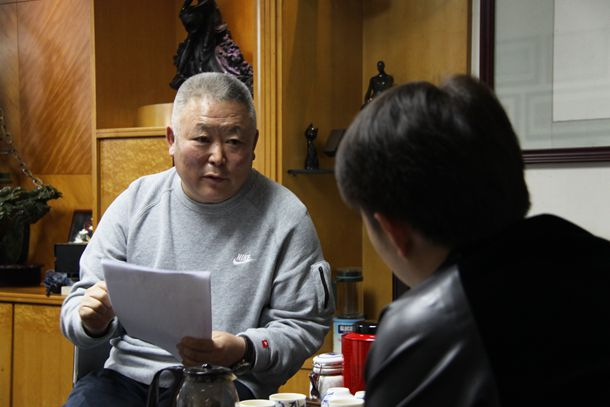

编者按：面对当前能源紧张和环境恶化的状况，绿色建筑已成为建筑未来的发展方向。医院作为保障人民生命健康的前沿阵地，也应在节能减排、控制污染、保护环境方面走在前列。“绿色医院”将是我国医院建设新兴的发展方向，是未来的发展趋势。针对“绿色医院”的建设要求，以及观察目前的医院建设成果，建筑装饰企业必然在其中扮演重要的角色。而作为建筑装饰行业的领导组织，中国建筑装饰协会也开始聚焦“绿色医院”，将于2015年4月24日--26日在天津举办“绿色医院建设高峰论坛暨绿色医院建筑星级评审要求与政府补助申请流程培训班”，旨在加强行业交流与合作，推动技术创新、促进医院建设的健康可持续发展。
为了解更多我国建筑装饰企业在“绿色医院”建设领域的探索和实践，以及所取得的成绩和遭遇的难题，也为了更好地推动上述活动顺利进行和取得有效成果，中装新网诚邀在医疗工程建设领域有突出表现的优秀建筑装饰企业进行采访。本期受访对象为深圳市汇然建设集团常务副总裁剪爱森。
中装新网：医疗建筑装饰工程在贵公司承接的装饰工程总量中占比多少？有哪些著名的工程？
剪爱森：目前医疗建筑装饰工程在汇然的总的业务量中大概占到12—15%，近年来承接的比较大型的工程有深圳滨海医院、合肥滨湖医院、成都中西医结合医院、中国人民解放军301医院海南分院等等。

中装新网：贵公司如何看待“绿色医院”建设发展趋势？装饰企业在其中能扮演什么样的角色？
剪爱森：近些年，除了在洁净与排放方面的要求日趋严格，新材料、新工艺的发展也比较迅速。
由于医院的特殊属性，事关人民生命健康，因此医院建设本身在洁净、排放等方面就需要高于普通装饰工程的标准。加上医院长期处于高负荷运转，水电等能耗较大，因此推行绿色医院势在必行。
装饰企业在绿色医院的推行中扮演者十分重要的角色，承担着将设计方案最终落地的使命。但由于绿色装饰前期的投资成本是显性的，而后期的运营成本的节省是相对隐性的。因此装饰企业应在业主认可的投资成本和装饰效果内，提供合乎绿色标准的相关解决方案，这对装饰企业也是一次综合实力的考验，装饰企业必须具备一定的条件：了解绿色建筑、绿色医院的实际内涵；具备自主施工能力，特别是实施绿色装饰所必需的施工、设计能力；拥有强大的供应链支撑。
中装新网：请例举贵公司在绿色医院建设方面的工程实践，或其他推动医疗建筑绿色装饰的举措，成效如何？
剪爱森：近年来，汇然为推行绿色装饰建立了相关数据库，搜集整理了大量人才、机构、材料、工艺数据，并将新技术、新材料、新设备、新工艺广泛运用到了医院装饰工程中。例如诞生于中国航天领域的银圭涂料，就是我们在绿色医院建设实践中发现的一款节能环保材料，它不仅耐酸碱、耐盐雾、耐高温不燃烧、不老化不褪色，且比普通乳胶漆饰面的密实度要高很多，加上涂料施工可以实现无接缝，这样就有效减少了细菌污物附着的可能，达到了洁净的要求。
此外，目前大多数建筑中，幕墙、门窗承担了40—50%的能耗释放，幕墙、门窗的节能成为建筑整体节能的重中之重。汇然现已拥有11项国家级节能门窗标识认证，并研发出适应我国不同气候区域的节能门窗，同时自主研发了多项节能幕墙、门窗专利产品。在幕墙、门窗的具体施工过程中，汇然也十分注重细节的处理，对人流较大区域的幕墙、门窗都尽量选用表面光滑度高、密实度高的材料，并保证接缝收口紧实，避免藏污纳垢。
中装新网：贵公司在践行绿色医院建设的过程中有无遭遇比如标准、技术、材料等问题和难题？
剪爱森：新标准需要建立在新技术和新材料的应用基础之上，而新技术新材料的应用与推广首先需要各级专家委员会的实验、论证、评价，然后才会有与之相对应的相关标准和规范。因此标准、材料、技术等方面问题实际是对装饰企业验证新材料与新工艺技术统筹能力和经验的考验。需要企业具备较强的自主研发和组织验证能力，同时还要懂得相关程序。
汇然近些年参与了20多项国家和地方工法、标准、规范的起草编制工作，在推动新材料、新技术、新设备、新工艺的使用上具备较强的专业能力。
中装新网：贵公司认为政府主管部门和行业协会推动绿色医院建设还有哪些方面可以着力？
剪爱森：为了能够让“绿色医院”更好更快的发展，我们希望政府和行业协会对企业提供相应的支持和保障，提高全行业对于绿色装饰、绿色医院的全面认识；建立规范的市场竞争秩序，引导企业公平竞争，公平交易；建立及时、宽泛、开放的信息平台，促进新技术、新材料、新工艺、新设备的有效推广和应用，推进更多新的标准和规范尽快地、及时地出台落地。